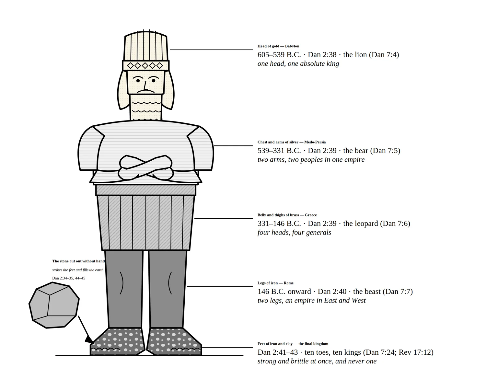
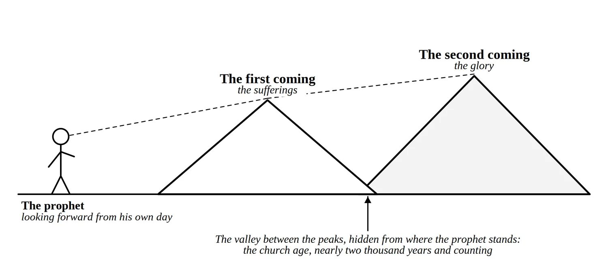
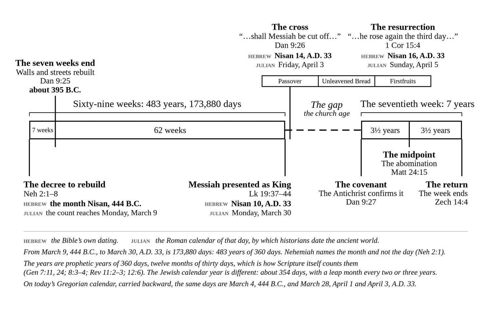

Chapter 4 of A Prelude to the End of the World, by Brandon Wallis
This Is Where All of Human History Is Heading
The Prophetic Timeline
This chapter of the book is free to read here. It covers the ground the chart covers in Nebuchadnezzar’s statue and the seventy weeks of Daniel: see it on the chart. The manuscript is in its final edit, so a word may still change. Notes like (see Chapter 13) point to other chapters of the book.
Nebuchadnezzar’s Statue
In Daniel chapter 2, God gave King Nebuchadnezzar a dream of a great statue made of different materials from head to toe, each representing a successive world empire that would dominate the earth until God Himself establishes His eternal kingdom. Daniel interpreted the dream, and history has confirmed every detail with stunning accuracy. In Daniel chapter 7, God gave Daniel a parallel vision of four beasts rising from the sea, each corresponding to one of the statue’s metals. Taken together, these two chapters provide a complete prophetic outline of Gentile world power from Babylon to the return of Christ.
The Pattern of the Metals
Before examining each empire, it is worth noticing the deliberate pattern in the materials God chose. The statue begins at the top with gold—the most costly, the most precious, the most beautiful of all metals. But gold is also the softest. As the statue moves downward, each material decreases in value and preciousness but increases in strength and hardness. Silver is less valuable than gold but harder. Bronze is less valuable than silver but stronger still. Iron is the least precious of all but the strongest—it crushes everything in its path. The pattern reveals something profound about the nature of these empires. Babylon, the head of gold, was the most glorious in terms of concentrated royal splendor—one king with absolute authority, ruling from a city of legendary beauty. But each empire that followed, while less glorious and less centralized, became militarily stronger and more brutally efficient. Rome, the legs of iron, had none of Babylon’s golden splendor, but it crushed the world under its boots with an iron grip no previous empire could match.
Then the pattern breaks. The feet and toes are made of iron mixed with clay (Dan 2:41–43). Iron is strong; clay is brittle. They do not bond. The final form of Gentile world power retains the iron strength of Rome but is fatally compromised by an element that weakens the whole structure. It is partly strong and partly fragile—a coalition of nations that cannot hold together, held in place only by the will of the Antichrist. The statue that began with the most precious metal at the top ends with the weakest mixture at the bottom, standing on feet that are destined to be struck by the stone cut without hands (Dan 2:34–35). The progression tells the whole story: human empire begins in golden glory and ends in unstable rubble, and then God’s kingdom replaces them all.
The Four Empires
The first empire was Babylon, represented by the head of gold (Dan 2:32, 37–38). Daniel told Nebuchadnezzar directly: “Thou, O king, art a king of kings: for the God of heaven hath given thee a kingdom, power, and strength, and glory…Thou art this head of gold” —Dan 2:37–38. In Daniel’s vision, Babylon appeared as a lion with eagle’s wings (Dan 7:4)—a picture of royal majesty and swift conquest. Nebuchadnezzar ascended to the throne in 605 B.C. and built the most magnificent empire the ancient world had ever seen. But the wings were plucked, and the lion was made to stand like a man—a picture of Nebuchadnezzar’s own humbling before God (Dan 4:28–37). Gold, the most precious metal, stood at the top: Babylon was the greatest of the empires in terms of absolute monarchial power, but it would not last.
The second empire was Medo-Persia, represented by the chest and arms of silver (Dan 2:32, 39). Daniel wrote that “…after thee shall arise another kingdom inferior to thee…” —Dan 2:39. In Daniel’s vision, Medo-Persia appeared as a bear raised up on one side, with three ribs in its mouth (Dan 7:5)—a picture of lopsided strength and devouring conquest. The two arms of the statue correspond to the two nations, Media and Persia, that merged into one empire (Dan 8:20). Cyrus the Great conquered Babylon in 539 B.C. Silver is inferior to gold, and Medo-Persia, though vast in territory, never wielded the absolute centralized authority that Nebuchadnezzar held. The empire stretched from India to Ethiopia, but its power was shared between its two peoples.
The third empire was Greece, represented by the belly and thighs of bronze (Dan 2:32, 39). Daniel described it as “…another third kingdom of brass, which shall bear rule over all the earth” —Dan 2:39. In Daniel’s vision, Greece appeared as a leopard with four wings and four heads, and dominion was given to it (Dan 7:6)—a picture of breathtaking speed and divided rule. The four wings represent the swiftness of Alexander the Great’s conquests, and the four heads represent the four generals who divided his empire after his death in 323 B.C. (Dan 8:21–22). Alexander swept across the known world beginning in 334 B.C., conquering from Greece to India in barely a decade. Bronze is stronger than silver but less precious—Greece conquered more territory but with less centralized splendor.
The fourth empire was Rome, represented by the legs of iron (Dan 2:33, 40). Daniel wrote: “And the fourth kingdom shall be strong as iron: forasmuch [because] as iron breaketh in pieces and subdueth [subdues] all things: and as iron that breaketh all these, shall it break in pieces and bruise” —Dan 2:40. In Daniel’s vision, Rome appeared as a fourth beast, “…dreadful and terrible, and strong exceedingly…” with great iron teeth that devoured and brake in pieces, and it was “…diverse from all the beasts that were before it…” (Dan 7:7). Rome formally became an empire in 27 B.C. and dominated the Mediterranean world for centuries. Iron is the strongest of the metals but the least precious—Rome ruled by sheer crushing force.
The two legs correspond to the eventual division of the empire into its Western and Eastern halves. The Western Roman Empire fell in A.D. 476, and the Eastern Roman Empire, known as the Byzantine Empire, endured nearly another thousand years before falling to the Ottoman Turks in A.D. 14531 when Constantinople was conquered. But Rome’s political, legal, and cultural structures never fully disappeared. Roman imperialism—placing its own people on the ground and taxing the peoples of the land—has echoed through Western civilization to the present day.
The Final Empire and the Stone
The fifth and final form of Gentile world power is represented by the feet and toes, made partly of iron and partly of clay (Dan 2:33, 41–43). This is not a new empire but the final stage of the fourth—Rome’s iron mixed with something brittle. Daniel explained: “And whereas thou sawest the feet and toes, part of potters’ clay, and part of iron, the kingdom shall be divided; but there shall be in it of the strength of the iron… the kingdom shall be partly strong, and partly broken. And whereas thou sawest iron mixed with miry [wet] clay, they shall mingle themselves with the seed of men: but they shall not cleave one to another, even as iron is not mixed with clay” —Dan 2:41–43.
The word “cleave” here means to hold together—these kingdoms will not unite. The ten toes correspond to the ten horns on the fourth beast in Daniel 7 (Dan 7:7, 24) and to the ten horns on the beast in Revelation (Rev 13:1; 17:12). These are ten kings who rise to power in the last days and hand their authority over to one ruler: the Antichrist. This is the beast kingdom (see Chapter 13). It carries Rome’s iron DNA—its governmental structures, its imperial reach, its crushing authority—but it is mixed with the clay of fractured peoples and unstable alliances that will not hold together. It combines the worst elements of all the empires that preceded it.
One phrase in that verse is worth a second look. Daniel says, “…they shall mingle themselves with the seed of men…” —Dan 2:43. The plain sense is the one already given: the rulers and peoples of the last kingdom will try to bind themselves together, by treaty and by marriage, and it will not hold. But look at the two materials the way the rest of Scripture uses them. Clay is man: “…we are the clay, and thou our potter…” —Isa 64:8, and Daniel calls it “potters’ clay” (Dan 2:41). Iron is what man forges to get his way. The first smith worked it (Gen 4:22). Sisera held Israel down with “…nine hundred chariots of iron…” —Judg 4:3, and the Philistines kept Israel weak by keeping the smiths from her (1 Sam 13:19). God would not let it touch His altar: “…thou shalt not lift up any iron tool upon them” —Deut 27:5. And Daniel says why the fourth kingdom is iron: “…forasmuch as iron breaketh in pieces and subdueth all things…” —Dan 2:40.
So the iron is the kingdom’s power to crush, and in Scripture that power is always something man has made. It is this book’s inference, and not a statement of the text, that the last kingdom will press its forged strength onto frail man more closely than any empire before it. Ours is the first generation that speaks openly of joining man to his machines (see Chapter 12). Beyond that the author can only picture. Some wonder whether the people of that kingdom will be part man and part machine, and whether the mark will be the means (see Chapter 13). No verse says so, and no reader should take a picture for a prophecy. Nor does this book find a return of the giants here. What Daniel does say cuts across every such dream: the iron and the clay “…shall not cleave one to another…” —Dan 2:43. Whatever is joined to man, man stays clay. And the stone that breaks the image is “…cut out without hands…” —Dan 2:34. Everything man has forged falls to the one thing he did not make.
In Daniel 7, these empires are listed in forward chronological order (see Figure 5) as they appeared on the stage of history: the lion (Babylon), the bear (Medo-Persia), the leopard (Greece), and the terrifying fourth beast (Rome) (Dan 7:4–7). The beast kingdom in Revelation absorbs the defining characteristics of each. It has the mouth of a lion—the fierce, consuming power of Babylon, a kingdom that devoured nations whole. It has the feet of a bear—the ferocious strength, might, and stability of Medo-Persia, an empire that planted itself and crushed everything underfoot. And it moves like a leopard—with the speed and swiftness of Greece, an empire that raced across the known world faster than any before it.

When John described this same beast in Revelation 13:2, he listed these characteristics in reverse order: leopard, bear, lion. The likeliest reason is that Daniel was looking forward through history, seeing the empires as they would come, while John was looking backward through history, seeing the empires as they had already passed. Both men described the same beast from opposite ends of the prophetic timeline (Rev 13:2). This is the beast and his kingdom, empowered by the dragon himself. It will devour the whole earth, trample it down, and break it to pieces (Dan 7:23).
But this final empire has an expiration date. Daniel saw a stone cut from a mountain by no human hand that struck the statue on its feet of iron and clay and shattered the entire image to dust (Dan 2:34–35). Then the stone became a great mountain and filled the whole earth. Daniel interpreted this for the king: “…in the days of these kings shall the God of heaven set up a kingdom, which shall never be destroyed: and the kingdom shall not be left to other people, but it shall break in pieces and consume all these kingdoms, and it shall stand for ever…” —Dan 2:44. That stone is Jesus Christ. The beast kingdom, for all its terrifying power, will be crushed by the returning King, and His kingdom will have no end.
The Ancient of Days and the Little Horn
Daniel saw this same transition from a heavenly perspective in chapter 7. After the four beasts and the ten horns, thrones were set in place and the Ancient of Days took His seat: “…whose garment was white as snow, and the hair of his head like the pure wool: his throne was like the fiery flame, and his wheels as burning fire. A fiery stream issued and came forth from before him: thousand thousands ministered unto him, and ten thousand times ten thousand stood before him: the judgment was set, and the books were opened” —Dan 7:9–10.
Then Daniel saw the Son of Man approaching the Ancient of Days: “And there was given him dominion [ruling authority], and glory, and a kingdom, that all people, nations, and languages, should serve him: his dominion is an everlasting dominion, which shall not pass away, and his kingdom that which shall not be destroyed” —Dan 7:14. The statue is crushed. The beasts are judged. And the Son of Man receives the kingdom that will never end. This is where all of human history is heading.
Before that kingdom comes, however, Daniel saw a disturbing detail among the ten horns of the fourth beast: “I considered the horns, and, behold, there came up among them another little horn, before whom there were three of the first horns plucked up by the roots: and, behold, in this horn were eyes like the eyes of man, and a mouth speaking great things” —Dan 7:8. This little horn rises from among the ten, uproots three of them, and speaks with arrogant authority.
The angel who stood by explained (Dan 7:16): “And he shall speak great words against the most High, and shall wear out the saints of the most High, and think to change times and laws: and they shall be given into his hand until a time and times and the dividing of time [three and a half years]” —Dan 7:25. This period marks the second half of the tribulation. This is the Antichrist (see Chapter 14), introduced here in Daniel’s vision centuries before John described him in Revelation. His reign, his blasphemy, and his persecution of the saints are explored in detail in Chapters 13 and 14 of this book.
The Times of the Gentiles
The prophetic timeline revealed in Daniel’s visions has a name in the New Testament. Jesus called it “the times of the Gentiles.” Speaking of Jerusalem’s future, He said: “…Jerusalem shall be trodden down [trampled] of the Gentiles, until the times of the Gentiles be fulfilled” —Lk 21:24. The times of the Gentiles began when Nebuchadnezzar first subjected Jerusalem in 605 B.C. The last kings of David’s line reigned as his vassals until Zedekiah was carried away in 586 B.C., and from that day to this, no son of David has sat on the throne. The Maccabees won a century of independence—about 140 to 63 B.C.—but they were priests of the line of Levi, not kings of the line of Judah, and Rome ended even that.2 Babylon ruled. Then Persia. Then Greece. Then Rome. Then a long succession of Gentile powers—Byzantine, Ottoman, British—trampled the land and the city. Even today, with the modern state of Israel reestablished, Jerusalem remains contested, and no son of David sits on the throne. The times of the Gentiles are still running.
The word “until” is critical. Jesus did not say that Jerusalem would be trampled forever. He said it would be trampled until the times of the Gentiles are fulfilled. There is an expiration date on Gentile dominion. That date arrives when the stone strikes the statue, when the Son of Man receives the kingdom, when Christ returns and establishes His throne in Jerusalem. At that moment, the times of the Gentiles are over, and the rightful King takes His seat on the throne of David. Every Gentile empire from Babylon to the beast kingdom is part of this single unbroken era of Gentile trampling, and every one of them is temporary. The kingdom that replaces them is eternal.
The Seventy Weeks of Daniel
Daniel 9:24–27 contains one of the most mathematically precise prophecies in all of Scripture. The angel Gabriel told Daniel that “…Seventy weeks…” (literally “seventy sevens”) were decreed “…upon thy people and upon thy holy city…” —Dan 9:24. Two things must be noted about this statement. First, Gabriel said “thy people.” Daniel was Jewish. His people are the Jewish people. His holy city is Jerusalem. This prophecy is about Israel, not the church. The church did not exist when this prophecy was given, and the seventy weeks are never applied to the church anywhere in Scripture. The entire framework of the seventy weeks concerns God’s program for Israel and Jerusalem.
Before examining this prophecy, one principle must be understood. Many of the prophets saw the sufferings and the glories of Christ compressed into a single vision, as though standing on a mountaintop and seeing two distant peaks with no awareness of the valley between them. Isaiah, for example, quoted the Messiah declaring: “The Spirit of the Lord GOD is upon me; because the LORD hath anointed me to preach good tidings [news] unto the meek [humble] … To proclaim the acceptable year of the LORD, and the day of vengeance of our God…” —Isa 61:1–2.
When Jesus read this passage in the synagogue at Nazareth, He stopped mid-sentence after “the acceptable year of the LORD” and said, “…This day is this scripture fulfilled in your ears” (Lk 4:18–21). He did not read “the day of vengeance of our God”—because that part belongs to His second coming. One sentence in Isaiah, two fulfillments separated by at least two thousand years. This pattern—often called the mountain peaks principle, after an image Clarence Larkin made famous a century ago3—appears throughout the prophetic Scriptures, and recognizing it is essential for reading prophecy faithfully. Daniel’s seventy weeks is the same kind of prophecy, and the gap falls in the same kind of place (see Figure 3).

The Six Purposes
The angel declared six purposes for the seventy weeks4: “Seventy weeks are determined upon thy people and upon thy holy city, to finish the transgression, and to make an end of sins, and to make reconciliation for iniquity [wickedness], and to bring in everlasting righteousness, and to seal up the vision and prophecy, and to anoint the most Holy” —Dan 9:24.
1. To finish the transgression.
2. To make an end of sins.
3. To make reconciliation for iniquity.
4. To bring in everlasting righteousness.
5. To seal up the vision and prophecy.
6. To anoint the most Holy.
These six purposes divide into two groups. The first three concern sin: finishing transgression, ending sin, and making reconciliation for iniquity. The price for all three was paid by Christ at the cross, but the purposes are stated of Daniel’s people and city, and they are not finished for Israel until the nation looks on the One she pierced and is saved (Zech 12:10; Rom 11:26–27). The last three concern the kingdom: bringing in everlasting righteousness, sealing up vision and prophecy, and anointing the most holy place—all fulfilled when Christ establishes His millennial kingdom. The seventy weeks span from the decree to rebuild Jerusalem all the way to the establishment of the kingdom. They cannot be complete until all six purposes are accomplished, and they have not all been accomplished yet. This is further confirmation that the seventieth week remains future.
Counting the Sixty-Nine Weeks
These “weeks” are weeks of years—seventy sevens, 490 years in all. The Hebrew shabua means simply “a seven,” and the Bible uses it of years as readily as of days: Laban’s “Fulfil her week…” —Gen 29:27 was seven years of labor, and the sabbatical count was “…seven sabbaths of years…” —Lev 25:8. Daniel himself, when he meant weeks of days in the very next chapter, wrote “weeks of days” (Dan 10:2–3), which he did not write here. Scripture itself also supplies the length of the year to be used. In the flood account, the five months from the seventeenth day of the second month to the seventeenth day of the seventh month are counted as one hundred and fifty days (Gen 7:11, 24; 8:3–4)—thirty-day months. And in the seventieth week, the same three and a half years are given as forty-two months (Rev 11:2; 13:5) and as 1,260 days (Rev 11:3; 12:6)—again thirty-day months, a 360-day year. This is the prophetic year, and sixty-nine weeks of them come to 483 × 360 = 173,880 days. It should not be confused with the Jewish calendar year. That year follows the moon and runs about 354 days, and a thirteenth month has to be added every two or three years, or the Passover would drift out of Abib, the spring month in which God fixed it (Ex 13:4; Deut 16:1). The 360-day year is the measure Scripture itself uses when it counts prophetic time.
The clock began with the decree of Artaxerxes to rebuild Jerusalem, issued in the month Nisan of the twentieth year of his reign (Neh 2:1–8). Artaxerxes came to the throne in 465 B.C.5 Nehemiah counted the king’s years from the fall, which is why the month Chislev and the Nisan that followed it both fall in the “twentieth year” (Neh 1:1; 2:1). That places this Nisan in 444 B.C. Nehemiah gives the month and not the day. By the Julian calendar, the Roman calendar of that time and the one by which historians date the ancient world, that Nisan began on or about March 5. The first seven weeks, forty-nine years, brought the rebuilding of the city and its walls to completion in the troubled generation after Nehemiah, ending around 395 B.C.
The next sixty-two weeks—434 years—ran on to the Messiah. Counted in days, the whole sixty-nine weeks are 173,880 days. Counted back from Monday, March 30, A.D. 33, they reach March 9, 444 B.C., a day inside the month Nehemiah names. Scripture gives the month, and the count supplies the day.6 On March 30, A.D. 33, the tenth of Nisan, the day the Passover lambs were set apart (Ex 12:3), Jesus rode into Jerusalem on the colt of a donkey and was presented to the nation as Messiah the Prince (Zech 9:9; Matt 21:1–11). He wept over the city that day, because it did not know “…the time of thy visitation” —Lk 19:44. Four days later, on the fourteenth of Nisan—Friday, April 3, A.D. 33—He was crucified. The astronomical tables confirm that the fourteenth of Nisan fell on a Friday in that year, as the Gospels require (Mk 15:42; Jn 19:31).7 The second day after, the sixteenth of Nisan, was Sunday, April 5, the day of Firstfruits, and on that morning He rose (Lev 23:11; 1 Cor 15:20).
This count was first worked out by Sir Robert Anderson in The Coming Prince, who dated the decree to 445 B.C. and arrived at April 6, A.D. 32 (the count is drawn out in Figure 1).8 Harold Hoehner, in Chronological Aspects of the Life of Christ, later corrected the accession year of Artaxerxes and the calendar and arrived at March 30, A.D. 33—the date used here.9 The difference between them is the dating of the starting point, not the method. This book follows Hoehner’s year and his day of arrival. It differs from him at one point only: he began the count on the first of Nisan, and Nehemiah does not say the first. That a Persian king’s decree can be counted forward by the day to the week of the crucifixion, from a prophecy written more than five centuries before it, shows how narrowly God specified the timing. Daniel’s seventy weeks did not point to a general era. They pointed to a day.

The Gap and the Seventieth Week
After the sixty-ninth week, Daniel was told, “…shall Messiah be cut off, but not for himself…” —Dan 9:26—a clear reference to the crucifixion. Then a gap appears in the timeline—one of those valleys between the mountain peaks. The first sixty-nine weeks have been fulfilled with mathematical precision, down to the exact day. The seventieth week has not yet been fulfilled. This final “week” represents seven years—the same unit of measurement used throughout Daniel’s prophecy. This is the seven-year tribulation that lies ahead, the subject of the second major section of this book.
Daniel 9:26 continues: “…and the people of the prince that shall come shall destroy the city and the sanctuary…” —Dan 9:26. This was fulfilled in A.D. 70 when the Roman legions under Titus destroyed Jerusalem and the temple.10 But notice the precise language: it is the people of the prince that shall come who destroy the city, not the prince himself. The prince is still future. He will come from the people who destroyed the temple; that is, from the territory of the old Roman Empire. This is the Antichrist, and his Roman connection is why this book expects the revived beast kingdom to rise from the territory of the old Roman Empire—Europe and the Mediterranean world.
Daniel 9:27 describes the start of the seventieth week: “And he shall confirm the covenant with many for one week: and in the midst of the week he shall cause the sacrifice and the oblation [the offering] to cease, and for the overspreading [overwhelming flood] of abominations he shall make it desolate, even until the consummation [the decreed end], and that determined shall be poured upon the desolate” —Dan 9:27. The Antichrist confirms a covenant with Israel for seven years. The Hebrew behind “confirm” is higbir, to make strong or to cause to prevail, which allows that he forces through a covenant already on the table rather than writing a new one; that is a shade of meaning, not a doctrine, but it fits a guarantor of the peace better than an author of it. At the midpoint—three and a half years in—he breaks it, stops the temple sacrifices (see Chapter 9), and commits the abomination of desolation.
Jesus referenced this exact event: “When ye therefore shall see the abomination of desolation, spoken of by Daniel the prophet, stand in the holy place … Then let them which be in Judaea flee into the mountains” —Matt 24:15–16. Jesus treated Daniel’s seventieth week as literal, future, and unfulfilled. He expected His followers to recognize the abomination when it happens and respond accordingly. The seventieth week is the tribulation, and the events it describes are examined in detail throughout Part II of this book.
A Defense of the Literal Seventieth Week
Some interpreters hold that the seventieth week followed the sixty-ninth without a break. On that reading, Christ Himself is the “he” who confirms the covenant with many, His death in the middle of the week caused sacrifice and oblation to cease in God’s sight, and the prophecy ran out in the first century. This is a literal reading in its way, and it deserves a literal answer rather than a charge of allegorizing. The answer is in the text. First, the nearest antecedent of “he” in verse 27 is not the Messiah but “the prince that shall come” of verse 26—the prince whose people destroyed the city and the sanctuary.
Second, verse 26 places two events after the sixty-ninth week and before the seventieth: Messiah is cut off, and the city and the sanctuary are destroyed. The first happened in A.D. 33 and the second in A.D. 70, thirty-seven years later—so the text itself already contains a gap of decades between the end of the sixty-ninth week and the events that follow it. Third, Christ never made a covenant for one week and broke it in the middle. The covenant of Daniel 9:27 is confirmed and then violated, and that is not the cross. Fourth, Jesus placed the abomination of desolation in the future when He spoke of it (Matt 24:15). And Paul placed the man of sin’s entry into the temple after the falling away (2 Thess 2:3–4). The seventieth week is a literal seven-year period, still future, in which God completes His program for Daniel’s people, Israel, and Daniel’s holy city, Jerusalem.
Others do allegorize it outright, treating the week as symbolic or as the church age. Against that reading the sixty-nine weeks stand as witness: the same angel, in the same prophecy, using the same unit of measurement, declared seventy weeks, and sixty-nine of them were fulfilled to the day. To handle sixty-nine weeks with historical precision and then abandon the method at the seventieth is to switch the hermeneutic mid-prophecy, reading one’s theology into the text rather than drawing the meaning out of it. If the unit is the same, weeks of years, and the subject is the same, Daniel’s people and Daniel’s city, and the messenger is the same, Gabriel, then the method must be the same. Sixty-nine literal weeks demand a literal seventieth, and that seventieth week, in which the Antichrist confirms a covenant with Israel, breaks it at the midpoint, and commits the abomination of desolation, is the tribulation.
The Case in Full: Nine Lines of Evidence
The defense above answers the objections. The positive case that the seventieth week is a literal, future, seven-year period is gathered here.
1. Sixty-nine weeks were fulfilled to the day. The same angel, in the same prophecy, using the same unit, counted seventy; sixty-nine of them ran from the decree of Artaxerxes to the day Christ rode into Jerusalem (Dan 9:25; Neh 2:1–8; Lk 19:37–44). The unit that carried the sixty-nine carries the seventieth.
2. The text itself has a gap. Verse 26 puts two events after the sixty-ninth week and before the seventieth: Messiah cut off, and the city and sanctuary destroyed. Those events are thirty-seven years apart (A.D. 33 and A.D. 70). The gap is not imposed on Daniel; it is in Daniel.
3. The six purposes are not finished. Seventy weeks were determined “…to finish the transgression… to bring in everlasting righteousness, and to seal up the vision and prophecy, and to anoint the most Holy” —Dan 9:24. Israel’s transgression is not finished, everlasting righteousness has not come to Jerusalem, and the most Holy has not been anointed. The weeks are not complete until the purposes are.
4. The “he” of verse 27 is the prince to come. The nearest antecedent is “…the prince that shall come…” —Dan 9:26, the ruler from the people who destroyed the city. Christ never confirmed a seven-year covenant and broke it in the middle; the prince will.
5. Jesus placed the abomination in the future. Decades after the sixty-ninth week had ended, He said, “When ye therefore shall see the abomination of desolation, spoken of by Daniel the prophet…” —Matt 24:15. If the seventieth week had run its course by then, He was pointing to a past event as a future sign.
6. Paul placed the man of sin in the future. He wrote that the day would not come until the man of sin was revealed, the one who “…sitteth in the temple of God, shewing [proclaiming] himself that he is God” —2 Thess 2:4—twenty years after the cross, and describing the same act Daniel and Jesus described.
7. The same half-week is measured five times. Daniel’s “…time and times and the dividing of time” —Dan 7:25, his “…a time, times, and an half…” —Dan 12:7, John’s “…a time, and times, and half a time…” —Rev 12:14, John’s forty-two months (Rev 11:2; 13:5), and John’s 1,260 days (Rev 11:3; 12:6) are the same three and a half years counted five times in three ways, and all of them belong to the beast, the temple, and the witnesses—none of which existed in A.D. 70 as the text describes them.
8. The desolation runs to the consummation. Verse 27 does not end with A.D. 70; it ends when “…that determined shall be poured upon the desolate” —Dan 9:27. The destruction of the city was the beginning of the desolations, not their consummation, and Jerusalem has been trodden down of the Gentiles ever since (Lk 21:24).
9. The pattern is Scripture’s pattern. Isaiah 61:2 holds a first coming and a second in one sentence with two thousand years between (Lk 4:18–21); Hosea saw Israel “…many days without a king…” and then returning “…in the latter days” —Hos 3:4–5. A prophecy that pauses is not a strange thing in the Bible. It is the normal thing.
Nine lines converge on one conclusion: the clock stopped at the sixty-ninth week and will start again at a covenant not yet signed. Everything in Part II of this book is what happens when it does.
Questions for Study and Discussion
1. What does “the times of the Gentiles” mean, and when did they begin?
2. Explain the mountain-peaks principle using Isaiah 61:1–2 and Luke 4:18–21. Why did Jesus stop reading where He did?
3. God let the seventy weeks stop at sixty-nine and has left the gap open for two thousand years. What does the length of that pause say about His patience, and about how He measures time compared with how you do?
Notes
1. Standard dates: Nebuchadnezzar’s accession, 605 B.C.; Cyrus’s capture of Babylon, 539 B.C.; Alexander’s crossing into Asia and the battle of the Granicus, 334 B.C., Gaugamela, 331 B.C., and his death at Babylon, 323 B.C.; Octavian’s assumption of the name Augustus, 27 B.C.; the deposition of the last western emperor, A.D. 476; the fall of Constantinople, 1453. See The Oxford Classical Dictionary, 4th ed. (Oxford: Oxford University Press, 2012), s.vv. ↩
2. Judean independence under the Hasmoneans is dated from 142 B.C. (1 Macc 13:41–42) to Pompey’s capture of Jerusalem in 63 B.C. (Josephus, Antiquities 14.4). ↩
3. Clarence Larkin, Dispensational Truth, or God’s Plan and Purpose in the Ages (Philadelphia: Rev. Clarence Larkin Est., 1918), chart “The Mountain Peaks of Prophecy.” ↩
4. Much of modern academic scholarship dates the book of Daniel to about 165 B.C., during the persecution under Antiochus IV, on the ground that its detailed account of the Persian and Greek periods reads like history written after the fact. If that were so, the seventy weeks would be no prophecy at all, and the argument of this chapter would collapse; the reader should know the claim is made and why this book does not accept it. Four things stand against it. Ezekiel, writing in the sixth century, names Daniel alongside Noah and Job as a byword for righteousness and again as a byword for wisdom (Ezek 14:14, 20; 28:3), which is strange language for a man who would not be invented for four hundred years. Copies of Daniel were among the Dead Sea Scrolls at Qumran, in a quantity and a state of transmission that argue for a book long established rather than one written a generation earlier. Daniel was translated into Greek for the Septuagint and was received as Scripture by a community that had no reason to accept a recent forgery. And the Lord Jesus attributed the book to “…Daniel the prophet…” —Matt 24:15 and treated its abomination as still future in His own day. The late date is a conclusion drawn from the premise that detailed predictive prophecy cannot happen; it is not a conclusion drawn from the manuscripts. For a fuller treatment see Robert Dick Wilson, Studies in the Book of Daniel (New York: G. P. Putnam’s Sons, 1917). ↩
5. Artaxerxes I succeeded Xerxes in 465 B.C.; see Hoehner, Chronological Aspects, 127–29, and the Babylonian and Elephantine records cited there. ↩
6. Dates before 1582 are given by the Julian calendar, the Roman calendar of the time; Friday, April 3, A.D. 33, is a Julian date. On today’s Gregorian calendar, carried backward, the same two days are March 4, 444 B.C., and March 28, A.D. 33: 476 years, there being no year zero, and 24 days, which is 173,856 + 24 = 173,880 days. Hoehner began the count on the first of Nisan (March 5) and reckoned 476 solar years and 25 days. But the dates are Julian, and the Julian calendar gains a day on the sun about every 128 years, so that from March 5, 444 B.C., to March 30, A.D. 33, is 173,884 days, four more than the prophecy’s 173,880. Nehemiah names no day (Neh 2:1), and the count needs none: it falls within his month. ↩
7. Humphreys and Waddington, “Dating the Crucifixion,” 743–46. ↩
8. Robert Anderson, The Coming Prince, 10th ed. (London: Hodder & Stoughton, 1915), chap. 10, “The Mystic Era of the Prophecy.” The first edition appeared in 1894. ↩
9. Hoehner, Chronological Aspects, 115–39, for the computation of the 173,880 days; on Nehemiah’s reckoning of the king’s years from Tishri, 127–28. ↩
10. Josephus, The Wars of the Jews 6.4–5, an eyewitness account of the Temple’s burning in August of A.D. 70. ↩
The seventieth week is still to come, and the rest of the book walks through it. About the book